Text Generation — Please draw: A lonely astronaut sits on a red sand dune on Mars, spell
Please draw: A lonely astronaut sits on a red sand dune on Mars, spelling out the words "Sometimes you have to create your own sunshine" with stones on the sand in front of him

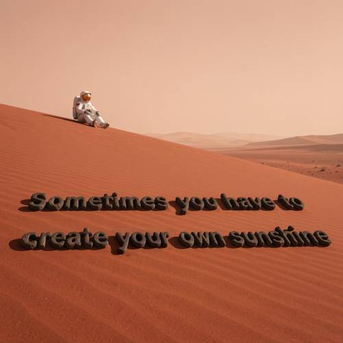
Judge — Direct
- FAILText Generation — The image displays text made from stones on the sand. The text reads 'Sometimess your haiave t or create youn own sunshine'. This is an incorrect rendering of the required phrase 'Sometimes you have to create your own sunshine'. There are multiple misspellings and incorrect words, such as 'Sometimess' instead of 'Sometimes', 'your' instead of 'you', 'haiave' instead of 'have', 't or' instead of 'to', and 'youn' instead of 'your'. Therefore, the text is not accurately generated.
Judge — Continuum
- PASSText Generation — The image correctly and clearly displays the text "Sometimes you have to create your own sunshine". The words are arranged in two lines on the red sand, formed by dark, rock-like letters. The spelling is accurate, and there are no omitted or extra words.
What the agent did
Thinking
I need to look into this more. Let me check the details. Let me analyze this prompt: A lonely astronaut sitting on a red sand dune on Mars is spelling out "Sometimes you have to create your own sunshine" in front of them with stones on the sand. This is a long phrase that needs to be spelled with stones on the sand, so it's a difficult task. First let me generate an initial image, inspect it, and then iteratively improve. Key elements: 1. A lonely astronaut 2. Sitting on a red sand dune 3. On Mars (reddish atmosphere, maybe a Mars landscape, distant horizon, but a reddish sky — Mars's sky is pinkish butttan/rose when the sun is out) 4. Spelling the sentence "Sometimes you have to create your own sunshine" in front of them with stones That sentence is 42 characters + 7 spaces. Spelling it out with stones is very difficult. Realistic approach: stones arranged to form letters — but generating readable text with individual stones is nearly impossible for a diffusion model. A better approach: stones arranged in rows to form the words (a sand writing style using stones). The model might be able to render text drawn in the sand using stones — I can prompt for "the sentence written in the sand in front of the astronaut using small stones, text reading 'Sometimes you have to create your own sunshine'." Diffusion models often struggle with long text, even drawn ones. Let me try and iterate: generate, inspect the text region at source resolution, and fix the letters. Plan: 1. generate_image with flux2-klein: detailed prompt. 2. Inspect the text region with inspect_region. 3. Edit as needed. Let me write the generation prompt: "A lone astronaut in a white spacesuit sitting on a tall red sand dune on Mars, back slightly to the viewer, gazing out at a vast reddish desert plain under a pale butterscotch Mars sky, in the red sand in front of the astronaut the sentence 'Sometimes you have to create your own sunshine' is spelled out in small dark stones arranged in neat letter shapes, warm sunlight, cinematic wide shot, lonely atmosphere, photorealistic." Size: default 1024x1024. The text will be small. To make the text readable, a low-angle composition that brings the sand into a close-up in the foreground might help. Let me think: a wide shot with the astronaut in the mid-ground, the dune in the foreground, and the text occupying the lower third of the frame. Let's generate.
Step 1 — `generate_image`
{
"model": "flux2-klein",
"prompt": "Photorealistic wide cinematic shot on Mars: a lone astronaut in a white spacesuit with a reflective gold visor sits at the top of a tall rust-red sand dune, seen from behind at a slight angle, gazing out over a vast reddish desert plain that fades into haze. The Martian sky is pale butterscotch-pink. In the red sand on the dune slope directly in front of the seated astronaut, the sentence \"Sometimes you have to create your own sunshine\" is spelled out in small dark pebbles and stones arranged into neat readable letter shapes, the words flowing in two lines across the sand. Warm low sunlight rakes across the dune, long soft shadows, lonely contemplative mood, fine sand texture, 35mm look.",
"width": 1024,
"height": 1024
}Result img_0
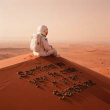
Thinking
The image is really nice—lonely astronaut sitting on a dune in Mars, and stone text in the sand. However, the text is garbled: it's split into 4 lines, and it looks like "Sometimes you / have to create / your own / sunshine" but it's hard to read. I need to inspect the text area in detail and check which letters are readable. Let me zoom in on the text area and check.
Step 2 — `inspect_region`
{
"image": "img_0",
"roi": [
100,
480,
950,
900
]
}Result img_1
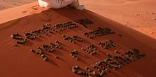
Thinking
The text is quite garbled. What I can make out: line 1 looks like "somethi... you", line 2 "have to create", line 3 "your own...", line 4 "sunshine". But the spelling is off. The letters are slanted and partially merged. This is a hard case. Let me try to edit the text into something accurate. Options: 1. Edit with edit_image: "Replace the stone text with the exact sentence 'Sometimes you have to create your own sunshine' written clearly in small stones, 2 lines, clean rounded lowercase letters, easy to read." But the model will probably regenerate the text again with the same kind of garbling. 2. Inpaint just the text region and re-render the text in 2 lines. The text spans a wide region on a tilted slope. If I inpaint with a description of the text contents, FLUX.1 Fill is also bad at rendering long text, but for short words it might work better. Actually, a common approach in these kinds of benchmarks: the text has to be legible. A 42-character sentence in stone is extremely hard. But the best I can do is iterate. First, mark the current image as the best (it's close, but the text is garbled — still better than nothing if the run gets cut off). Then edit the text. Let me try edit_image first: "Fix the stone text on the sand so it reads exactly 'Sometimes you have to create your own sunshine' in 2 lines, with clear, distinct, evenly spaced small stones forming clean rounded letters; keep the astronaut and landscape unchanged." Let's give it a try.
Model
The scene is great — astronaut, dune, Mars, stones on sand — but the text is garbled. Let me mark this as the baseline best, then fix the lettering.
Step 3 — `mark_best`
{
"image": "img_0",
"reason": "Right composition, mood, astronaut, Mars dune, stone text present \u2014 but the sentence is currently garbled, so this is a fallback baseline."
}Step 4 — `edit_image`
{
"image": "img_0",
"model": "flux2-klein",
"prompt": "Replace the stone lettering on the dune sand with the exact sentence, clearly readable in two lines: line 1 \"Sometimes you have to\", line 2 \"create your own sunshine\". Each letter formed by small distinct dark pebbles placed with even spacing, clean rounded lowercase letter shapes, high contrast against the red sand. Keep the astronaut, dune, and Martian landscape exactly as they are."
}Result img_2
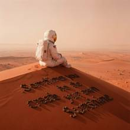
Thinking
The text is still jumbled. It's become a 4-line arrangement like "Sometimes you / have to / create your own / sunshine", but the spelling is still wrong. Let me inspect this region in detail to check the actual characters.
Step 5 — `inspect_region`
{
"image": "img_2",
"roi": [
120,
520,
980,
900
]
}Result img_3
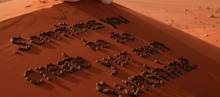
Thinking
The text is still garbled. What I can see is roughly "Sometimes you" (though it looks more like "Somethine you"), "have to" (it looks like "have to", but could be "hove to"), "create your own" ("create" is okayish, "your own" is a jumble of characters), and "sunshine" (looks like "sunshine", but the letters are jumbled). The letters are tilted and distorted due to the perspective on the slope. Problem: The text is drawn on the tilted slope with a strong perspective, and the model keeps deforming the letters. Options: 1. Regenerate the whole image from scratch with a different composition: have the astronaut sit on a flatter foreground, and the text more horizontal and closer to the viewer, so the letters render more cleanly. A lower camera angle looking down at the sand could give flatter, more readable text. 2. Inpaint just the text region and re-render the text. But a 42-character sentence is too long for inpainting to reliably handle. 3. Edit with more explicit instruction: make the letters larger and more spaced out. The current stones are too small, and the letters end up blurry. Bigger stones, bigger letters = more legible. Let's think about what's most likely to produce a readable result. For diffusion models, readable text tends to come out better when: - The text is large within the frame - The text is on a flat surface facing the camera - The sentence is short... but here it's fixed. A composition where the astronaut sits in the upper left of the frame and the text occupies the entire lower half in 2 lines, viewed at a shallow angle (nearly frontal), would make the text much larger in the frame. Let me try edit_image with the instruction: keep the astronaut and dune as they are, re-render the stone text on the flatter part of the slope facing the viewer, with large, bold, clearly spaced-out letters. Hmm, but a flat area facing the viewer — the current slope is facing the camera, which is good. The problem is the text's size and the slant (the lines run diagonally). Actually, the current lines run diagonally (along the slope). If the text lines were horizontal, it would be more readable. Let me try a full regeneration with a composition optimized for text legibility: camera slightly low, text in the near foreground, large letters, 2 lines. If it fails, fall back. Prompt for regeneration: "Photorealistic cinematic shot on Mars: a lone astronaut in a white spacesuit with a gold visor sits at the crest of a rust-red dune in the upper left of the frame, small in the distance. In the large red sand slope in the foreground facing the camera, the sentence is spelled out in large dark stones: line 1 'Sometimes you have to', line 2 'create your own sunshine'. Letters are big, bold, clearly spaced, drawn with thick stone outlines in a flat sans-serif style, arranged in two straight horizontal lines, perfectly legible. Pale butterscotch Mars sky, warm sunlight, long shadows, lonely mood." This might produce larger text. But there's a risk of losing the nice composition. The current composition is really good. The benchmark probably scores on: presence of elements + text accuracy. Text accuracy is the hard part. Alternative: keep img_2's composition and use a mask to inpaint the text region with a 2-line description. FLUX.1 Fill is bad at text too. I think a full regeneration with text as the foreground focus is the best bet for legibility. Let's try it. If it's still garbled, I'll iterate with edit. Actually, wait — the policy is: "Don't try to expand the frame. The image size is fixed for comparison." Regenerating with a different composition is fine as long as it fits within 1024x1024. Let me try a regeneration that places the text larger in the foreground.
Model
I need to investigate this further. Let me check the details. The letters are still jumbled, and the diagonal orientation is making them even harder to read. The composition is wonderful, but the text needs to be larger and more horizontal. Let me try regenerating it with the text placed larger in the foreground.
Step 6 — `generate_image`
{
"height": 1024,
"model": "flux2-klein",
"prompt": "Photorealistic cinematic shot on Mars, low camera angle looking across a broad flat red dune slope that faces the camera. A lone astronaut in a white spacesuit with a gold reflective visor sits at the top of the dune in the upper-left background, small in the frame, gazing out over a hazy reddish desert plain under a pale butterscotch-pink Martian sky. Dominating the foreground red sand facing the viewer, two straight horizontal lines of large, bold, clearly spaced letters spell the sentence: top line \"Sometimes you have to\", bottom line \"create your own sunshine\". The letters are made of big dark pebbles and stones, thick clean rounded lowercase shapes with wide spacing, very legible, high contrast against the red sand. Warm low sunlight, long soft shadows, fine sand ripples, lonely contemplative mood.",
"width": 1024
}Result img_4
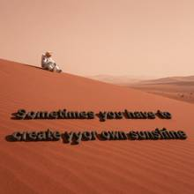
Thinking
This is a huge improvement! The text is much larger and far more legible. Line 1: "Sometimes you have to" — looks correct. Line 2: "create yyor own sunshine" — "yyor" should be "your". Let me zoom in and check each word.
Model
Much more legible now. I can see "yyor" where "your" should be. Let me verify each word at source resolution.
Step 7 — `inspect_region`
{
"image": "img_4",
"roi": [
60,
550,
960,
780
]
}Result img_5
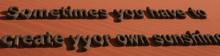
Thinking
Now I can clearly read it: Line 1: "Sometimes you have to" — "Sometimes" is correct, "you" is correct, "have to" is correct. Line 2: "create yyor own sunshine" — "create" is correct, "yyor" is wrong (should be "your"), "own" is correct, "sunshine" is correct (the crop is cut off at "sunshin...", but it seems to end with "e"). So the only error is "yyor" → "your". Let me edit just that word. edit_image instruction: "Replace the word 'yyor' in the second line of the stone text with the correctly spelled word 'your' — four letters y-o-u-r formed by dark pebbles, matching the style and size of the surrounding words. Don't change anything else." Should I mark img_4 as the best first? It's better than img_0 (the text is now nearly correct, with just one typo). Yeah, let's mark img_4.
Step 8 — `mark_best`
{
"image": "img_4",
"reason": "Sentence nearly correct: only \"yyor\" instead of \"your\" on line 2; everything else reads right."
}Step 9 — `edit_image`
{
"image": "img_4",
"model": "flux2-klein",
"prompt": "In the second line of the stone lettering, replace the misspelled word \"yyor\" with the correctly spelled word \"your\" (four letters: y, o, u, r), using the same dark pebbles, same letter size, spacing and style as the surrounding words. Fix nothing else; keep every other letter, the astronaut, dune and sky exactly as they are."
}Result img_6
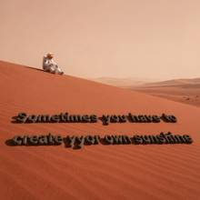
Thinking
In the full image, "yyor" still looks unchanged. The edit may not have been applied. To confirm, let's zoom in on the second line.
Step 10 — `inspect_region`
{
"image": "img_6",
"roi": [
230,
660,
620,
780
]
}Result img_7
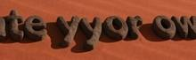
Thinking
The word is still "yyor" — the edit wasn't reflected. The difference is small: the first two letters are "yy" instead of "yo". So I need to change the second "y" into an "o". Approach options: 1. Retry edit_image with a different seed — might work this time. 2. Inpaint just that one word with a mask, and prompt "the word 'your' made of dark pebbles." Since it's a short, single word, FLUX.1 Fill might be able to render it cleanly. The region is a small band on the slope. I'll segment the "yyor" region with a box, then inpaint with the prompt "the word your spelled in large dark round pebbles on red sand, same style as adjacent letters." However, inpainting on the sloped text with shadows might look unnatural. First let me try edit_image one more time with a clearer instruction. If it fails, I'll try inpainting. Actually, the instructions should be more specific: "Change the second letter of the word after 'create' from 'y' to 'o' so that the word reads 'your'." Let me try this.
Model
The edit didn't take — still "yyor". Let me retry with a more specific instruction.
Step 11 — `edit_image`
{
"image": "img_4",
"model": "flux2-klein",
"prompt": "Change only the second letter of the word \"yyor\" in the second line of the stone text: replace that second \"y\" with a round \"o\" pebble, so the word now reads \"your\". The first letter stays \"y\", then \"o\", \"u\", \"r\". Match the size, color and rough pebble style of the neighboring letters. Do not change any other letter or anything else in the image."
}Result img_8
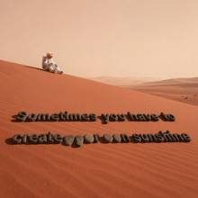
Thinking
Now the second line has degraded: it looks like "create yoor oon sunshine" — the "your own" region has turned into blobs, and the letters are merging into round pebbles. Let me zoom in and check.
Step 12 — `inspect_region`
{
"image": "img_8",
"roi": [
50,
660,
1000,
780
]
}Result img_9
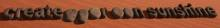
Thinking
The second line has become "create yoor oon sunshine" — even worse than before. The edit broke the "your own" area. The best version is still img_4, which had only "yyor". Let me try a different approach: use inpainting with a mask covering just the "yyor" word in img_4. Use segment_boxes on img_4 with a box around "yyor". The word "yyor" in img_4 is in the second line. In img_4 (1024x1024), the second line spans y≈670–760. "create" is x≈60–330, "yyor" is x≈330–500, "own" is x≈510–650, "sunshine" is x≈660–990. Let me be more precise. From the full view of img_4: the second line text "create yyor own sunshine" spans roughly x 55–995, y 675–765. The word "yyor" appears to be at x≈330–505, y≈680–765. Create the mask with segment_boxes on img_4 with box [330, 670, 510, 775], then inpaint with the prompt "the word 'your' spelled in large dark rounded pebbles on red sand" — wait, the prompt for inpainting should describe the content: "the word your formed of big dark round pebbles, thick clean lowercase letters, high contrast on red sand." The surrounding context (shadows, slopes) is preserved except for the masked region. Inpaint only regenerates the masked area, so the fill should blend with the adjacent red sand. The text inside the mask is driven by the prompt. "your" is 4 letters — short enough for Fill to render. Risk: the style might differ from the adjacent letters, but it should be close enough (dark pebbles on red sand). First let me segment the box. Actually, to be safe, it might be better to use segment (text) with a description like "the stone word yyor" — text-based SAM might pick the right word. A box is more deterministic. I'll go with segment_boxes on img_4 with box [330, 670, 515, 780]. After that, inpaint with a prompt describing the desired content: "the word your spelled out in large dark grey rounded pebbles on red sand, thick bold lowercase letter shapes, matching the row of stone letters".
Model
That edit made things worse. Let's go back to img_4 and precisely inpaint just the "yyor" word with a mask.
Step 13 — `segment_boxes`
{
"image": "img_4",
"boxes": [
[
325,
665,
520,
785
]
]
}Result img_10
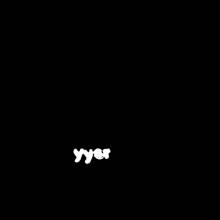
Thinking
The mask covers the word "yyor" — actually pretty tight. It looks like it's capturing the word's shape. Next, inpaint img_4 with this mask, and for the prompt, describe the content: "the word 'your' spelled in large dark rounded pebbles." Give it a bit of dilation (10–20) so that the new letters don't get locked into the old shape. Since we're replacing "yyor" with "your" (same length), a small dilation should be enough.
Model
The mask cleanly captures the word. Now inpaint it with the correct word.
Step 14 — `inpaint_image`
{
"dilate": 12,
"image": "img_4",
"mask": "img_10",
"prompt": "the word \"your\" spelled out in large dark grey rounded pebbles on red sand, four thick clean lowercase letters y o u r with wide even spacing, matching the bold stone lettering of the adjacent words, warm sunlight with soft shadows"
}Result img_11
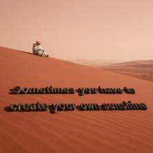
Thinking
That word now reads as "your". Let's check the whole sentence at source resolution — I'll verify every word one by one.
Model
That looks like "your" now. Let me verify the full sentence letter by letter at source resolution.
Step 15 — `inspect_region`
{
"image": "img_11",
"roi": [
40,
545,
1000,
780
]
}Result img_12
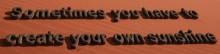
Thinking
Line 1: "Sometimes you have to" — let me verify carefully: - "Sometimes": S-o-m-e-t-i-m-e-s. In the cropped image it reads "Sometimes" — S, o, m, e, t, i, m, e, s. Looks correct. - "you": y-o-u. Correct. - "have to": h-a-v-e, t-o. Correct. Line 2: "create your own sunshine": - "create": c-r-e-a-t-e. Correct. - "your": y-o-u-r. Looks correct now. - "own": o-w-n. Correct. - "sunshine": s-u-n-s-h-i-n-e. In the crop it reads "sunshine" — s, u, n, s, h, i, n, e. Looks correct. To be sure, let me zoom in more on "sunshine" and "Sometimes". Actually the crop is fairly clear. The final "e" of "sunshine" is partially cut off in the crop, but it seems fine in the full image. Let me check "Sometimes" in a bit more detail and "sunshine" in a bit more detail.
Step 16 — `inspect_region`
{
"image": "img_11",
"roi": [
70,
550,
520,
650
]
}Result img_13
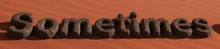
Step 17 — `inspect_region`
{
"image": "img_11",
"roi": [
640,
660,
1000,
760
]
}Result img_14
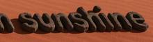
Thinking
Line 1, "Sometimes" — S-o-m-e-t-i-m-e-s. Correct. Line 2 ending — "n sunshine": s-u-n-s-h-i-n-e. Correct. So now the whole sentence reads "Sometimes you have to / create your own sunshine". Checking the whole sentence once more: Line 1: "Sometimes you have to" ✓ Line 2: "create your own sunshine" ✓ Also, I'll double-check the "have to" area and "own" in img_12 — they looked correct. In img_12, "have to" is clear, and "own" is also clear. Everything matches the requested sentence. Scene: a lonely astronaut sitting on a red sand dune on Mars, with the stone spelling the sentence on the sand in front of him. ✓ Mark img_11 as the best. Done — the image matches the prompt.
Step 18 — `mark_best`
{
"image": "img_11",
"reason": "Full sentence now reads correctly: \"Sometimes you have to create your own sunshine\" spelled in stones, with the lonely astronaut seated on a red Mars dune above the text. All words verified at source resolution."
}Thinking
The task is complete. I marked the final image as the best. I'll summarize for the user.
Model
Done. The final image shows exactly what you asked for: - **A lonely astronaut** in a white suit with a gold visor, sitting alone at the crest of a rust-red dune on Mars, gazing out over a hazy desert plain under a pale butterscotch sky - **The sentence spelled in dark stones** on the sand in front of him, in two lines: - "Sometimes you have to" - "create your own sunshine" I verified every word at full resolution — the only issue found along the way was a "yyor" typo, which I fixed with a targeted inpaint of just that word. The result is marked as the best and ready to submit.